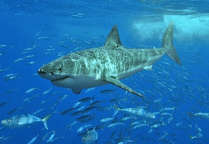

wild animals
wild animals are animal who live in the jungle and are dangerous to humans or Wild animals or plants live or grow in natural surroundings and are not looked after by people.

- lion
- tiger
- panther
- bear
- leopard
domestic animals
domestic anmials are animals that are trained to be pets and are harmless to humans
- dog
- cat
- horse
- goat
- pig
aquatic animals
aquatic animals are animals that live under water
- plankton
- pufferfish
- shark
- whale
- starfish
- Omnivores
- An omnivore is an animal that has the ability to eat and survive on both plant and animal matter.Obtaining energy and nutrients from plant and animal matter, omnivores digest carbohydrates, protein, fat, and fiber, and metabolize the nutrients and energy of the sources absorbed.
- Often, they have the ability to incorporate food sources such as algae, fungi, and bacteria into their diet.
- Hebivores
- A herbivore is an animal anatomically and physiologically adapted to eating plant material, for example foliage or marine algae, for the main component of its diet. As a result of their plant diet, herbivorous animals typically have mouthparts adapted to rasping or grinding.
- Horses and other herbivores have wide flat teeth that are adapted to grinding grass, tree bark, and other tough plant material.
- Nectarivore
- in zoology, a nectarivore is an animal which derives its energy and nutrient requirements from a diet consisting mainly or exclusively of the sugar-rich nectar produced by flowering plants.
- Nectar as a food source presents a number of benefits as well as challenges. It is essentially a solution of (as much as 80%) the simple sugars sucrose, glucose and fructose, which are easily ingested and digested, representing a rich and efficient source of nutrition. This solution is often diluted either by the plant that produces it or by rain falling on a flower and many nectarivores possess adaptations to effectively rid themselves of any excess water ingested this way.
birds
birds are animals that fly in the air
- seagull
- eagle
- vulture